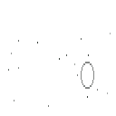
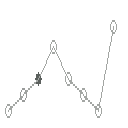
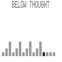
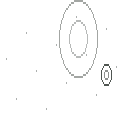
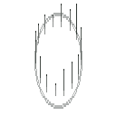
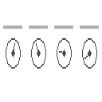
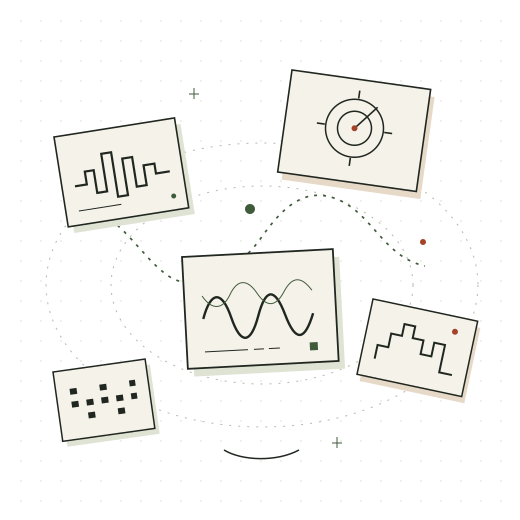
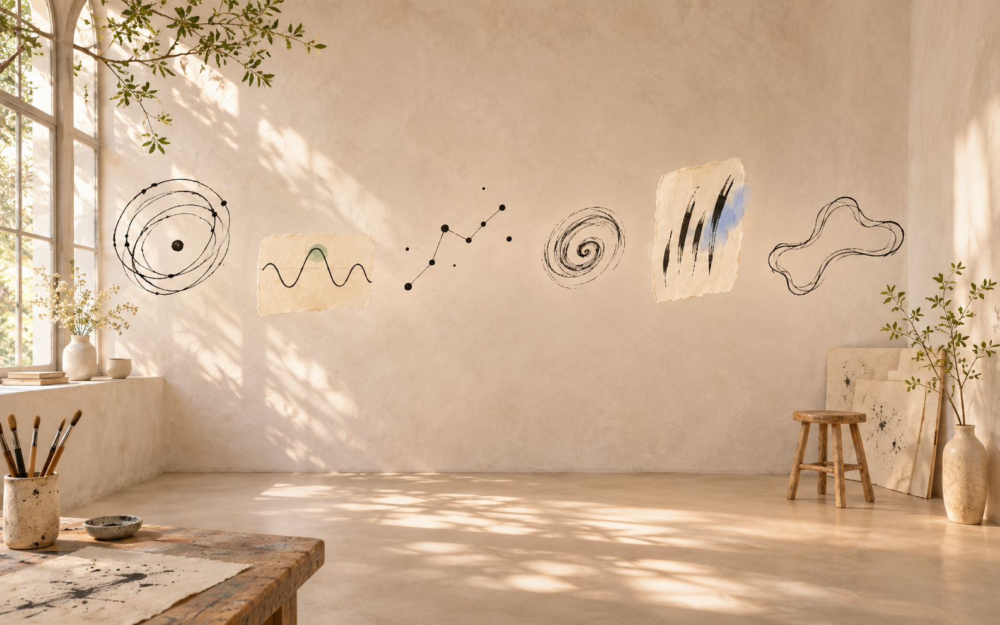

Spatial Synth Maestro — an orchestra of ink for Apple Vision Pro

Almost Asleep
Small Doubts
Below Thought
Insistent Thought
Someone Else
An Old FeelingA new print. The instruments are unchanged.
listen.
Actual native synthesis and ink, rendered as six studio sound studies. This is not headset footage or a spatial-audio demonstration. No microphone input or user recordings are used.
Sound studies

elsewhere.

one hand.
new consequences.
A hand and three instrument drawings occupy different depths. Pointer movement gently shifts the illustration; it does not play audio. Reduced motion keeps it still.
a way back.
one minute.